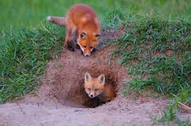
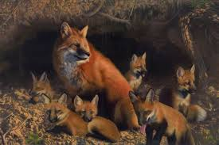

The Red Fox
SuperPower- The Pounce
Red foxes are predominantly nocturnal and prefer to hunt late in the evening through until the early hours of the
morning
One of the most familiar hunting strategies in the fox’s arsenal is the ‘mousing pounce’, which is employed when
hunting small mammals.Once the fox has a good idea where its quarry is, it approaches slowly, stopping
frequently to listen and, when it gets within striking distance, it rears on to its hind legs, bends its knees
and jumps up, landing with its front paws on its quarry, which is quickly snapped up
When the fox judges it is within striking distance it ‘explodes’ from its spot and a remarkable race ensues. As the fox runs it employs its tail as a counterbalance, as it twists and turns in pursuit of its prey.
Lair of RedFox:
- RedFoxes sometimes take up residence underground in excavations called earths or dens
- an earth is a hole dug into the ground, with a hollowed-out chamber at the end of the entrance tunnel where the fox sleeps and in which cubs are raised.
- The entrance tunnel is typically between five and seven metres (16–23 ft.), although they may reach up to 17 m long (56 ft.).
- they may also mark the entrance with scat. An earth may be used for several consecutive years.
- Preferred den sites tend to be on sheltered (among trees, under buildings or under dense vegetation such as bramble), well-drained ground (often slopes) with loose, easily dug, soil
- They live in parks and woodland edges, and red foxes will readily eat whatever is available
- Fox earths are distinguished from badger setts by the lack of bedding and the droppings and food remains often found in the vicinity
- The area of the earth can look particularly 'untidy' when cubs are present.
- Fox earths/dens are often dug into earth banks or made under dense patches of bramble, hawthorn or gorse.


Go to Index.html file